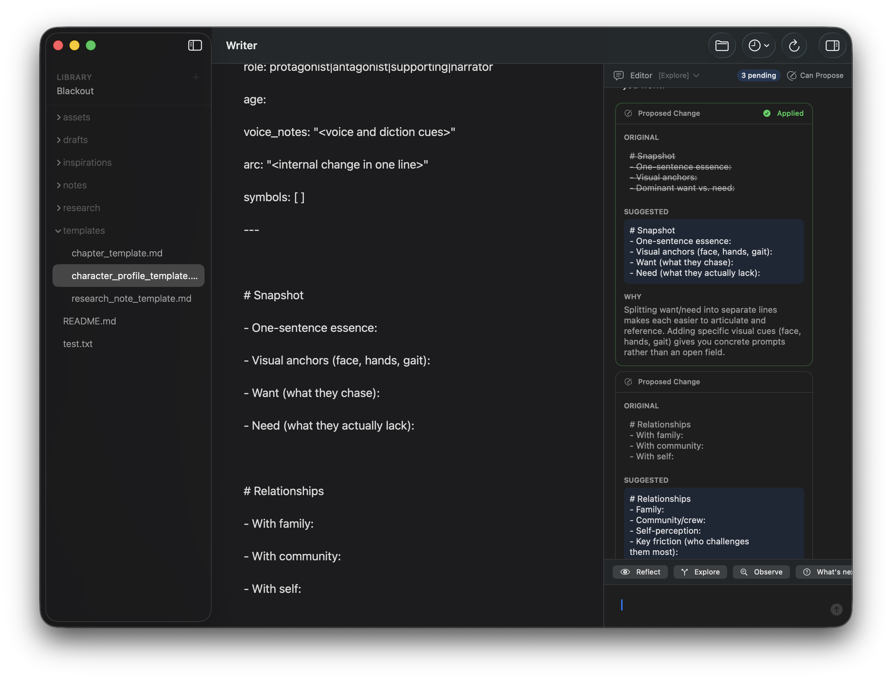

Writer
A macOS writing app with an AI editorial witness
Download for macOS Requires macOS 15 or later

Not a ghost-writer — a thoughtful companion that observes, reflects, and proposes. Every edit requires your consent. No silent modifications. You remain the author.
How it works
Observe
Claude watches you write, noticing what's working and what isn't.
Reflect
Ask questions that help you see your work differently.
Propose
See the original, the suggestion, and why — then you decide.
Disappear
Beautiful typography. A distraction-free space for thinking.
Requirements
- macOS 15+
- Claude Code CLI
- Claude subscription